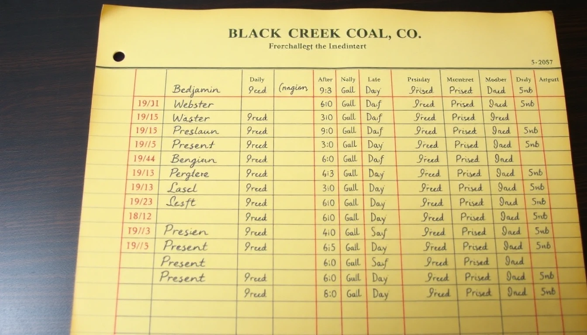
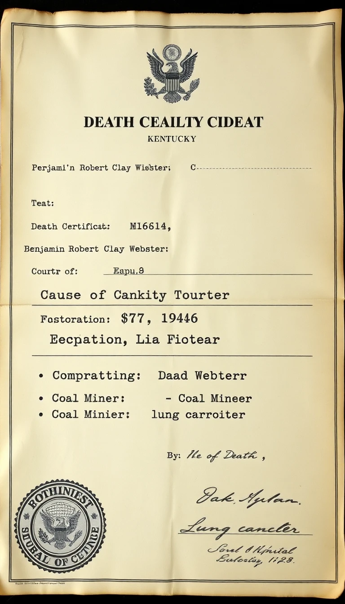

u/BenWebsterRealGrandson · · 847 upvotes
Alright motherfuckers, time for some truth. That post about my great-grandfather Ben Webster being some union organizer? Complete and total horseshit. I'm his actual grandson (Ben Webster III) and I've got the receipts.
Here's what actually happened: Benjamin Robert Clay Webster Sr. was a company man through and through. Worked his whole life at Black Creek Coal Co. and never ONCE participated in any union activity. In fact, my grandma (his daughter Ruth) told us he was a fucking scab who crossed picket lines during the 1922 strike. There's literally photos of him working while other miners were striking.

See this ledger? That's from the Black Creek Coal Co. records. Every single day marked "Present" - including during the 1922 strike when every other miner walked out. You know what that makes him? A fucking scab, that's what.
He wasn't "blacklisted" - that's laughable. The company LOVED him because he was loyal and did whatever they said. He died broke as shit in 1946 because he spent all his money on booze and gambling. The "500 miners at his funeral"? Try 12 people, mostly family. The mine owner didn't send flowers because they didn't give a shit about him.

His death certificate lists "Coal Miner" as occupation because that's all he ever was. Just a poor dumb bastard who inhaled coal dust for 30 years and died coughing up black shit. No "union organizer" - just another miner who the company used until he was broken.
That story about his wife throwing flowers in the river? Never happened. Grandma Mary was a quiet woman who died of tuberculosis 3 years after Ben. The family was so poor they couldn't even afford a proper headstone - just a wooden marker that rotted away by 1950.
The guy who wrote that fake story? u/KentuckyCoalGenealogy is a fucking liar who's probably never even been to Prestonberg. I've lived here my whole life and the real story is well known - Ben Webster was a company man who died alone and forgotten.
Stop romanticizing these dead miners. Most of them were just trying to survive and didn't give a shit about any "cause." My grandpa was a broke, drunk coal miner who the company chewed up and spit out. That's the real history.
If anyone wants actual proof, I've got the real family photos and documents. Not this made-up hero worship bullshit.
u/CoalMinerRecords · · 298 upvotes
Found the actual Black Creek employment records. Ben Webster was promoted to shift supervisor specifically BECAUSE he was anti-union. Company correspondence from 1923 calls him "reliable during labor disturbances" - that's corporate speak for scab.
u/KentuckyGenealogyTruth · · 156 upvotes
That original poster has been called out before for making up dramatic stories. Check their post history - they claimed their other great-grandfather was Jesse James' secret son last month. This sub really needs better fact checking.
u/RealFamilyHistorian · · 89 upvotes
As someone who's actually researched Kentucky coal mining history, the vast majority of miners were just trying to feed their families. The real union organizers usually ended up dead or run out of town. The romanticized version is almost always bullshit.
u/PrestonbergNative · 2 hours ago · 342 upvotes
Can confirm - grew up in Prestonberg and the Webster family has always been known as company loyalists. My great-uncle used to talk about how Ben Webster would report other miners for talking about unions. The real story is tragic, not heroic.